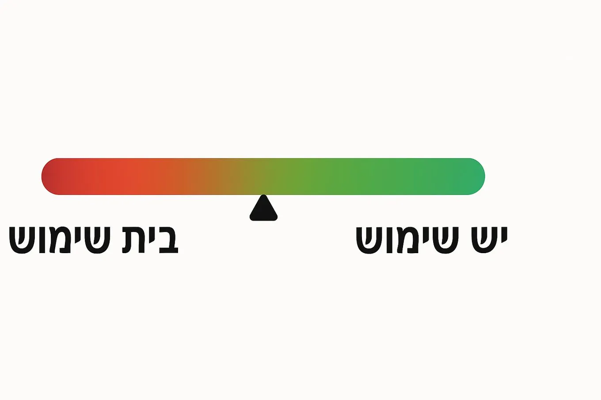

Judge AI features by usefulness, not novelty
Originally posted on LinkedIn, April 28, 2025.
The wave of AI announcements has become a tsunami. Every day brings a new feature that looks exciting and advanced, but is sometimes unnecessary.
This week I saw an announcement for a new MCP that connects to Jira and can be created easily inside Docker. It sounded futuristic, and developers were clearly excited. After a quarter of an hour with it, I realized it was less convenient than the simple VS Code plugin I already use, which opens a branch and updates the Jira ticket with one click.
The same thing happened with OpenAI’s big announcement about ChatGPT being able to “see.” I tried to understand what I could do with it and even asked around. I still have not found a real use for it. The technology is remarkable, but it is not useful to me.
The voice capability is different. I have used it for conversations more than once. If it were slightly better, I would probably use it more often.
There are plenty of other examples. How many people returned to Chat GPT image generation after the initial excitement around Disney images of themselves and celebrities faded? How many use Google Notebook LLM every day to hear a podcast narrate a boring document? Does Custom GPT make a noticeable difference, and do people use it at all? The same questions apply to deep analysis and agents that browse the web for you.
Instead of getting excited automatically, I use a simple scale:
useless ← useful
The question is not what a tool can do. It is what it can do for me.
If it does not save time, make work easier, or solve a real pain point, it may be cool, but it is still useless. That does not diminish the unprecedented technical achievement behind it.
